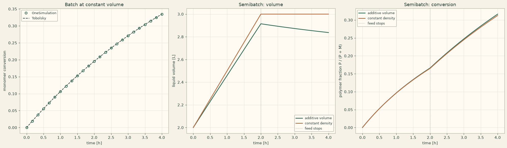

Docs › Examples › Semibatch polymerisation with volume shrinkage
Reaction engineering · 0D
Semibatch polymerisation with volume shrinkage
Styrene polymerises in a stirred tank fed with monomer for two hours; the denser polymer makes the liquid shrink and every concentration rise.

What it computes
OneSimulation integrates the well-mixed amounts of monomer, polymer and initiator with quasi-steady radical kinetics in a dynamic-volume process unit whose molar volumes let the reaction change the volume, and compares it with the usual constant-density model.
What it checks
At constant volume the batch conversion follows Tobolsky's closed form to 1e-15 (0.3347 after 4 h); with shrinkage the volume equals the additive sum of the molar volumes to 2e-15, ends 5.7 % below the constant-density model, and 1.2 % more polymer is produced.
The notebook
The complete notebook, cell by cell. Run it to produce the figures and the comparison printout.
In a free-radical polymerisation the initiator I decays into radicals that add monomer M to growing chains. With the quasi-steady radical concentration \([R^\bullet]=\sqrt{f k_d[\mathrm I]/k_t}\) the rates per volume are
where P counts the monomer units built into polymer. Styrene (0.862 g/cm³ at 70 °C) turns into polystyrene (1.04 g/cm³): the molar volume of a unit falls from \(v_\mathrm M=120.8\) to \(v_\mathrm P=100.1\) cm³/mol, 17 % shrinkage at full conversion. In a well-mixed tank with the amounts \(n_i\) and an additive volume \(V=\sum_i n_iv_i\),
Setup. 2 L of styrene with 20 mol/m³ AIBN at 70 °C; the same mixture is fed at 0.5 L/h for two hours, then the batch is held for two more hours. \(k_p=480\) L/(mol s) (IUPAC benchmark, M. Buback et al., Macromol. Chem. Phys. 196 (1995) 3267), \(k_t=10^8\) L/(mol s), \(k_d=3.78\cdot10^{-5}\) 1/s and \(f=0.6\) for AIBN (Polymer Handbook, 4th ed., Wiley 1999).
Reference. For a batch at constant volume the monomer conversion has the closed form of A.V. Tobolsky, J. Am. Chem. Soc. 80 (1958) 5927,
and with shrinkage the volume must equal \(\sum_i n_iv_i\) at every time.
import numpy as np
from onesim.physics.systems import ProcessModelsProvider, ProcessStream, ProcessUnit
from onesim.visualization import plots, theme
theme.set()Kinetics and molar volumes
The reaction law returns the rates of the three components (and no heat: the jacket holds the temperature). molar_volumes lets these rates change the volume of a dynamic_volume unit; the volume of the dissolved initiator (0.1 % of the liquid) is neglected.
hour, temperature = 3600.0, 343.15
kp, kt, kd, efficiency = 0.480, 1.0e5, 3.78e-5, 0.6
monomer, initiator = 862.0 / 0.10415, 20.0
volumes = {"M": 0.10415 / 862.0, "P": 0.10415 / 1040.0, "I": 0.0}
reaction = lambda c, T, t: (
{
"I": -kd * c["I"],
"M": -kp * c["M"] * np.sqrt(efficiency * kd * max(c["I"], 0.0) / kt),
"P": kp * c["M"] * np.sqrt(efficiency * kd * max(c["I"], 0.0) / kt),
},
0.0,
)
charge = {"M": monomer, "P": 0.0, "I": initiator}
rk4 = ProcessModelsProvider.bind_provider_parameters(
{"time_integration": "classical_rk4"}
)
print(
f"styrene {monomer:.0f} mol/m³, shrinkage at full conversion {1 - volumes['P'] / volumes['M']:.1%}"
)Batch at constant volume: the kinetics against Tobolsky
Four hours without feed and without shrinkage.
batch = ProcessModelsProvider(
component_ids=("M", "P", "I"),
units=(
ProcessUnit(
"reactor",
volume=2e-3,
initial_concentrations=charge,
initial_temperature=temperature,
reaction_law=reaction,
),
),
streams=(),
final_time=4 * hour,
time_step=10.0,
**rk4,
).execute()
t = batch.times
conversion = 1 - batch.concentrations["reactor"]["M"] / monomer
tobolsky = 1 - np.exp(
-2 * kp * np.sqrt(efficiency * initiator / (kd * kt)) * (1 - np.exp(-kd * t / 2))
)
for hours in (1, 2, 4):
k = np.argmin(np.abs(t - hours * hour))
print(
f"batch, constant volume, {hours} h: conversion {conversion[k]:.5f}, Tobolsky {tobolsky[k]:.5f}"
)
print(
f"largest deviation from Tobolsky over 4 h: {np.abs(conversion - tobolsky).max():.1e}"
)Semibatch with and without shrinkage
The feed stream carries the charge composition at 0.5 L/h for two hours. The first run treats the volume as additive; the second lets it follow only the feed, the usual constant-density assumption.
feed = ProcessStream(
"feed",
None,
"reactor",
lambda time: 0.5e-3 / hour if time < 2 * hour else 0.0,
charge,
feed_temperature=temperature,
)
runs = {
label: ProcessModelsProvider(
component_ids=("M", "P", "I"),
units=(
ProcessUnit(
"reactor",
volume=2e-3,
initial_concentrations=charge,
initial_temperature=temperature,
reaction_law=reaction,
dynamic_volume=True,
molar_volumes=molar,
),
),
streams=(feed,),
final_time=4 * hour,
time_step=10.0,
**rk4
).execute()
for label, molar in (("additive volume", volumes), ("constant density", None))
}Results
Volume, amounts and conversion after the feed and at the end; the additive rule \(V=\sum n_iv_i\) for the shrinking run.
for label, run in runs.items():
V, c = run.volumes["reactor"], run.concentrations["reactor"]
amounts = {i: c[i] * V for i in ("M", "P", "I")}
fed = monomer * np.minimum(run.times, 2 * hour) * 0.5e-3 / hour
print(
f"{label:17s}: V(2 h) = {np.interp(2 * hour, run.times, V) * 1e3:.4f} L, V(4 h) = {V[-1] * 1e3:.4f} L, "
f"polymer {amounts['P'][-1] * 0.10415:.4f} kg, conversion {amounts['P'][-1] / (monomer * 2e-3 + fed[-1]):.4f}"
)
V, c = (
runs["additive volume"].volumes["reactor"],
runs["additive volume"].concentrations["reactor"],
)
print(
f"additive rule: largest |V - sum n_i v_i| / V = {np.abs(V - sum(c[i] * V * volumes[i] for i in volumes)).max() / V.max():.1e}"
)
print(
f"the constant-density model underestimates the polymer after 4 h by "
f"{1 - runs['constant density'].concentrations['reactor']['P'][-1] * runs['constant density'].volumes['reactor'][-1] / (c['P'][-1] * V[-1]):.2%} "
f"and overestimates the final volume by {runs['constant density'].volumes['reactor'][-1] / V[-1] - 1:.2%}"
)Figure
Batch conversion against Tobolsky, and the semibatch volume and conversion of both models.
fig = plots.figure(1, 3, size=(18, 5.2))
plots.line(
points={"OneSimulation": (t[::60] / hour, conversion[::60])},
reference={"Tobolsky": (t / hour, tobolsky)},
xlabel="time [h]",
ylabel="monomer conversion",
title="Batch at constant volume",
legend="upper left",
ax=fig[0],
)
plots.line(
y={
label: (run.times / hour, run.volumes["reactor"] * 1e3)
for label, run in runs.items()
},
vlines={"feed stops": 2.0},
xlabel="time [h]",
ylabel="liquid volume [L]",
title="Semibatch: volume",
legend="lower right",
ax=fig[1],
)
plots.line(
y={
label: (
run.times / hour,
run.concentrations["reactor"]["P"]
/ (run.concentrations["reactor"]["P"] + run.concentrations["reactor"]["M"]),
)
for label, run in runs.items()
},
vlines={"feed stops": 2.0},
xlabel="time [h]",
ylabel="polymer fraction P / (P + M)",
title="Semibatch: conversion",
legend="upper left",
ax=fig[2],
)
plots.show()Going further
Add the gel effect (a termination constant that drops with conversion) through the reaction law, or release the heat of polymerisation (−70 kJ/mol) with a cooling jacket in heat_source to see the temperature rise that the shrinkage hides.